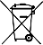

Über das Telefon Sicherheits- & rechtliche Hinweise
Über das Telefon Sicherheits- & rechtliche HinweiseRichtige Handhabung und Nutzung
Dieser umfassende Leitfaden enthält auch die grundlegenden Sicherheitshinweise aus der Broschüre zur Sicherheit und beschränkten Garantie, die Sie zusammen mit Pixel 4a (5G) erhalten haben. Darüber hinaus finden Sie hier zusätzliche Informationen zur Sicherheit und beschränkten Garantie sowie rechtliche Hinweise zu Pixel 4a (5G).
Sicherheits- und Umweltinformationen sowie rechtliche Hinweise: g.co/pixel/safety oder Einstellungen Über das Telefon Sicherheits- & rechtliche Hinweise
Bestimmungen der beschränkten Garantie für das Land, in dem Sie das Produkt erworben haben, einschließlich einer Anleitung dazu, wie Sie einen Anspruch im Rahmen der beschränkten Garantie geltend machen: g.co/pixel/warranty
Elektronische Zulassungszeichen und Werte zur spezifischen Absorptionsrate (SAR) für Ihr Gerät: Einstellungen Über das Telefon Zulassungszeichen
Umfassende Onlinehilfe: g.co/pixel/help
 WARNUNG: GESUNDHEITS- UND SICHERHEITSHINWEISE; VOR DER NUTZUNG LESEN, UM DAS RISIKO VON VERLETZUNGEN, BESCHWERDEN, SACHSCHÄDEN, EINSCHLIEẞLICH BESCHÄDIGUNGEN AN PIXEL 4a (5G), UND ANDEREN POTENZIELLEN GEFAHREN ZU REDUZIEREN
WARNUNG: GESUNDHEITS- UND SICHERHEITSHINWEISE; VOR DER NUTZUNG LESEN, UM DAS RISIKO VON VERLETZUNGEN, BESCHWERDEN, SACHSCHÄDEN, EINSCHLIEẞLICH BESCHÄDIGUNGEN AN PIXEL 4a (5G), UND ANDEREN POTENZIELLEN GEFAHREN ZU REDUZIEREN
Gehen Sie mit Pixel 4a (5G) vorsichtig um. Wenn Sie Ihr Gerät zerlegen, fallen lassen, es verbiegen, zu großer Hitze aussetzen, darauf treten oder es durchstechen, können Sie das Gerät oder den Akku beschädigen. Verwenden Sie Pixel 4a (5G) nicht, wenn das Gehäuse beschädigt oder das Display gesprungen ist. Die Verwendung eines beschädigten Pixel 4a (5G) kann zur Überhitzung des Akkus oder zu Verletzungen führen. Pixel 4a (5G) sollte nicht mit Flüssigkeiten in Berührung kommen. Dies könnte zu einem Kurzschluss oder einer Überhitzung führen. Versuchen Sie nicht, Pixel 4a (5G) mit einer externen Wärmequelle zu trocknen, wenn es nass geworden ist.
Pixel 4a (5G) funktioniert am besten bei einer Umgebungstemperatur zwischen 0 °C und 35 °C und sollte an Orten mit einer Umgebungstemperatur zwischen -20 °C und 45 °C gelagert werden. Legen Sie Pixel 4a (5G) nicht an Orten ab, an denen die Temperatur 45 °C übersteigen kann, z. B. auf dem Armaturenbrett eines Autos oder in der Nähe einer Heizung. Hohe Temperaturen können das Gerät beschädigen, den Akku überhitzen oder das Brandrisiko erhöhen. Halten Sie Pixel 4a (5G) von Wärmequellen fern und schützen Sie es vor direkter Sonneneinstrahlung. Wenn sich Ihr Gerät zu stark erhitzt, trennen Sie es ggf. von der Stromquelle, legen Sie es an einem kühleren Ort ab und verwenden Sie es erst wieder, nachdem es sich abgekühlt hat. Pixel 4a (5G) ist für den Betrieb in Höhen von bis zu 2.000 m ausgelegt.
Bei der Verwendung in bestimmten Modi, z. B. beim Spielen, bei der Videoaufnahme, bei Verwendung der Taschenlampenfunktion oder im VR-Modus, kann Pixel 4a (5G) mehr Wärme erzeugen als unter normalen Betriebsbedingungen. Dies kann dazu führen, dass Pixel 4a (5G) in einen Modus mit geringerer Leistung versetzt oder vorübergehend deaktiviert wird. Seien Sie besonders vorsichtig, wenn Sie das Gerät in diesen Modi nutzen.
Versuchen Sie nicht, Pixel 4a (5G) selbst zu reparieren. Das Auseinanderbauen des Geräts kann zur Beeinträchtigung der Wasserbeständigkeit, sowie zu Schäden am Gerät oder zu Verletzungen führen.
Wenn Ihr Pixel 4a (5G) nicht ordnungsgemäß funktioniert oder beschädigt ist, nehmen Sie es nicht in Betrieb. Wenden Sie sich stattdessen an den Kundenservice. Weitere Informationen finden Sie unter g.co/pixel/contact.
Achten Sie darauf, dass das Netzteil und Ihr Pixel 4a (5G) gut belüftet sind, wenn Sie das Gerät nutzen oder laden. Die Verwendung beschädigter Kabel oder Netzteile oder das Aufladen bei Feuchtigkeit kann zu Bränden, Stromschlägen, Verletzungen oder Schäden an Pixel 4a (5G) oder an sonstigem Eigentum führen. Stecken Sie zum Laden des Geräts das Netzteil in eine Steckdose in der Nähe Ihres Pixel 4a (5G), die leicht zugänglich ist. Das Gerät darf beim Aufladen keiner direkten Sonneneinstrahlung ausgesetzt sein.
Stecken Sie zum Laden des Geräts das Netzteil in eine Steckdose in der Nähe Ihres Pixel 4a (5G), die leicht zugänglich ist. Wenn Sie das Netzteil aus der Steckdose nehmen, ziehen Sie immer am Stecker und niemals am Ladekabel. Vermeiden Sie ein Verdrehen oder Quetschen des Kabels und drücken Sie den Stecker niemals mit Gewalt in einen Anschluss. Falls Ihnen beim Laden eine Meldung angezeigt wird, in der Sie zum Herausziehen des Ladegeräts oder des Netzteils aufgefordert werden, trennen Sie das Ladegerät oder das Netzteil von der Stromquelle. Kontrollieren Sie, dass sowohl der Anschlussstecker des Ladekabels als auch der Ladeanschluss des Smartphones trocken und partikelfrei sind.
Laden Sie Ihr Pixel 4a (5G) nur mit einem USB-C-PD-kompatiblen Ladegerät wie dem mitgelieferten Netzteil oder mit einem USB-C-Ladegerät, das im Google Store oder bei von Google autorisierten Verkäufern erhältlich ist. Achten Sie dabei auf das "Made For"-Logo von Google. Das Netzteil muss als Stromquelle mit begrenzter Leistung gemäß IEC 60950-1/62368-1 gekennzeichnet sein: 5 V DC, max. 3 A; 9 V DC, max. 2 A oder beides. Das Netzteil muss außerdem die CTIA-Zertifizierungsanforderungen für die Einhaltung von IEEE 1725 durch Akkusysteme erfüllen. Ein solches Netzteil ist im Lieferumfang Ihres Pixel 4a (5G) enthalten. Bei Verwendung von inkompatiblem Ladezubehör besteht die Gefahr von Bränden, Stromschlägen, Verletzungen und Beschädigungen an Gerät und Zubehör.
Pixel 4a (5G) und das Ladegerät erzeugen im Normalbetrieb Wärme. Dabei erfüllen sie relevante Normen und halten Grenzwerte für Oberflächentemperaturen ein. Vermeiden Sie längeren direkten oder indirekten Hautkontakt, wenn das Gerät in Gebrauch ist oder aufgeladen wird, da heiße Oberflächen zu unangenehmen Empfindungen oder auch Verbrennungen führen können. Schlafen Sie nicht auf oder mit Ihrem Gerät oder dem Netzteil ein und legen Sie keine Decke und kein Kissen darauf. Das ist besonders wichtig, wenn Ihre Haut Wärme aus gesundheitlichen Gründen nur eingeschränkt wahrnehmen kann.
Dieses Gerät ist kein Spielzeug. Im Smartphone selbst oder im Lieferumfang können Kleinteile, Elemente aus Kunststoff, Glas oder Metall und scharfkantige Teile enthalten sein, die eine Verletzungs- oder Erstickungsgefahr darstellen. Es sind Fälle bekannt, in denen sich Kinder mit Netz- und Verbindungskabeln stranguliert haben. Bewahren Sie die Kabel des Smartphones außerhalb der Reichweite von Kindern auf (mehr als 1 Meter entfernt) und lassen Sie sie nicht mit dem Smartphone und dem Zubehör spielen. Andernfalls besteht die Gefahr, dass sich das Kind selbst oder auch andere Personen verletzt oder dass das Gerät beschädigt wird. Falls Kleinteile verschluckt wurden, holen Sie umgehend ärztlichen Rat ein.
 Eine lang anhaltende, starke Geräuschbelastung, einschließlich Musik, kann Hörverlust zur Folge haben. Sie können potenzielle Gehörschäden vermeiden, indem Sie das Gerät nicht über längere Zeit mit hoher Lautstärke verwenden. Eine anhaltend hohe Geräuschkulisse und Hintergrundgeräusche können dazu führen, dass Geräusche leiser wahrgenommen werden, als sie eigentlich sind. Prüfen Sie die Lautstärke, bevor Sie Kopf- oder Ohrhörer verwenden.
Eine lang anhaltende, starke Geräuschbelastung, einschließlich Musik, kann Hörverlust zur Folge haben. Sie können potenzielle Gehörschäden vermeiden, indem Sie das Gerät nicht über längere Zeit mit hoher Lautstärke verwenden. Eine anhaltend hohe Geräuschkulisse und Hintergrundgeräusche können dazu führen, dass Geräusche leiser wahrgenommen werden, als sie eigentlich sind. Prüfen Sie die Lautstärke, bevor Sie Kopf- oder Ohrhörer verwenden.
Dieses Smartphone enthält einen wiederaufladbaren Lithium-Ionen-Akku. Eine Beschädigung dieser empfindlichen Komponente kann zu Verletzungen führen. Versuchen Sie nicht, den Akku zu entfernen. Wenden Sie sich an Google oder an einen von Google autorisierten Anbieter, um den Akku auszutauschen. Weitere Informationen zum Kontakt finden Sie unter g.co/pixel/contact. Beim Austausch durch nicht qualifizierte Personen kann Ihr Gerät beschädigt werden. Ein unsachgemäßer Austausch oder das Verwenden eines nicht geeigneten Akkus kann zu Bränden, Explosionen, Auslaufen oder anderen Gefahren führen. Nehmen Sie keine Änderungen am Akku vor, arbeiten Sie ihn nicht wieder auf und verwerten Sie ihn nicht wieder. Versuchen Sie nicht, ihn zu durchstechen oder Gegenstände in den Akku einzuführen. Lassen Sie den Akku nicht mit Feuer, Wasser und anderen Flüssigkeiten in Kontakt kommen und vermeiden Sie es, ihn übermäßiger Hitze oder anderen Gefahren auszusetzen. Schließen Sie den Akku nicht kurz und achten Sie darauf, dass keine metallischen oder leitfähigen Gegenstände mit den Akkukontakten in Berührung kommen. Lassen Sie das Smartphone oder den Akku nicht fallen. Wenn das Smartphone oder der Akku heruntergefallen ist, insbesondere auf eine harte Oberfläche, und Sie einen Schaden vermuten oder bemerken, wenden Sie sich zur Überprüfung an Google oder an einen von Google autorisierten Dienstanbieter. Falls der Akku ausläuft, vermeiden Sie den Kontakt der austretenden Flüssigkeit mit Augen, Haut oder Kleidung. Sollte Flüssigkeit in Ihre Augen gelangen, reiben Sie sie nicht. Spülen Sie die Augen sofort mit sauberem Wasser aus und holen Sie ärztlichen Rat ein.
Dieses Smartphone enthält einen wiederaufladbaren Lithium-Ionen-Akku, der die Norm IEEE 1725 und andere geltende Normen erfüllt.
Entsorgen Sie Ihr Gerät, den Akku und das Zubehör gemäß den bei Ihnen geltenden Umweltvorschriften. Sie sollten sie ausschließlich auf ordnungsgemäße Weise transportieren und nicht im Hausmüll entsorgen. Eine unsachgemäße Entsorgung kann zu Bränden, Explosionen und anderen Gefahren führen. Das Smartphone darf weder geöffnet, zerbrochen, Temperaturen über 45 °C ausgesetzt noch verbrannt werden. Weitere Informationen zum Recycling Ihres Smartphones finden Sie unter g.co/pixel/recycle.
Um Schäden an den Komponenten oder internen Schaltkreisen zu vermeiden, verwenden und lagern Sie das Gerät oder Zubehör nicht in einer staubigen, rauchigen, feuchten oder schmutzigen Umgebung oder in der Nähe von Magnetfeldern. Halten Sie das Gerät von Wärmequellen fern und schützen Sie es vor direkter Sonneneinstrahlung. Legen Sie das Smartphone nicht in einem Fahrzeug oder an Orten ab, an denen die Temperatur 45 °C übersteigen kann, z. B. auf dem Armaturenbrett eines Autos, auf einer Fensterbank, in der Nähe eines Heizungsauslasses oder hinter Glas, das längere Zeit direktem Sonnenlicht oder starkem UV-Licht ausgesetzt ist. Dies kann zu Schäden am Smartphone oder zu einer Überhitzung des Akkus führen und eine Brand- bzw. Explosionsgefahr darstellen.
Laden, verwenden, lagern und transportieren Sie das Smartphone nicht an Orten, an denen entzündliche oder explosive Stoffe gelagert werden, z. B. Tankstellen, Treibstofflagern oder Chemieanlagen. Verwenden Sie das Gerät auch nicht an Orten, an denen Sprengarbeiten durchgeführt werden oder Explosionsgefahr besteht. Dazu gehören z. B. Umgebungen, an denen die Luft hohe Konzentrationen entzündlicher Chemikalien, Dämpfe oder Partikel wie Getreide, Staub oder Metallpulver enthält. In solchen Bereichen können Funken eine Explosion oder einen Brand verursachen und zu Verletzungen oder sogar zum Tod führen. Beachten Sie an Orten, an denen solche Gefahren bestehen, sämtliche Hinweise und Beschilderungen.
Ihr Smartphone kann auf Karten- und Navigationsdienste zugreifen. Karten- und Navigationsdienste stehen nicht immer und überall zur Verfügung, da die Qualität der Datenverbindung und verfügbare Standortdienste sich auf die Funktionalität auswirken können. Beachten Sie bitte, dass Karten und Wegbeschreibungen ungenau sein können und die tatsächlichen Bedingungen manchmal vielleicht nicht mit Kartendaten, Verkehrsinformationen oder Wegbeschreibungen übereinstimmen. Überprüfen Sie Wegbeschreibungen sorgfältig und beachten Sie alle geltenden Straßenverkehrsvorschriften und Schilder. Daher erfolgt die Verwendung der Karten- und Navigationsdienste auch immer auf eigene Gefahr – Sie sollten sich nie blind auf diese Angaben verlassen. Sie sind jederzeit selbst für Ihr Verhalten und dessen Folgen verantwortlich. Die AR-Funktion muss auf aktuelle Bilder von Google Street View zugreifen können und erfordert eine stabile Internetverbindung und ausreichendes Tageslicht. Sie ist in Indien nicht verfügbar.
Die Nutzung des Geräts kann Sie bei bestimmten Aktivitäten ablenken und Sie sowie andere dadurch in Gefahr bringen. Verwenden Sie das Gerät nicht beim Auto- oder Fahrradfahren und nicht bei der Bedienung von Maschinen, um das Unfallrisiko zu verringern. In vielen Regionen ist dies ohnehin gesetzlich verboten. Nutzen Sie das Gerät auch nicht bei anderen Aktivitäten mit potenziell schwerwiegenden Folgen. Beachten Sie die örtlichen Vorschriften zur Verwendung von Mobilgeräten, Kopfhörern und Helmen.
Dieses Gerät wurde geprüft und entspricht den geltenden behördlichen Vorschriften für die Funkwellenbelastung. Es wurde so konzipiert und hergestellt, dass die geltenden Emissionsgrenzwerte für die Abgabe von Hochfrequenzenergie nicht überschritten werden.
In Ländern, in denen der Grenzwert für die spezifische Absorptionsrate (SAR) bei 1,6 W/kg gemittelt über je 1 g Gewebe liegt, betragen die höchsten SAR-Werte für G025E 1,20 W/kg bei Verwendung direkt am Kopf und 1,20 W/kg bei einem Abstand von 1 cm zum Körper sowie für das Modell G6QU3 1,20 W/kg bei Verwendung direkt am Kopf und 1,20 W/kg bei einem Abstand von 1 cm zum Körper. In Ländern, in denen der Grenzwert für die spezifische Absorptionsrate (SAR) bei 2 W/kg gemittelt über je 10 g Gewebe liegt, betragen die höchsten SAR-Werte für diesen Gerätetyp 0,94 W/kg bei Verwendung direkt am Kopf und 1,40 W/kg bei einem Abstand von 5 mm zum Körper.
Die SAR-Werte für diese Länder finden Sie auf Pixel 4a (5G) unter: Einstellungen Über das Telefon Zulassungszeichen.
Sie können die HF-Belastung reduzieren, indem Sie eine Freisprechfunktion verwenden, z. B. die integrierte Freisprechfunktion, die mitgelieferten Kopfhörer oder ähnliches Zubehör. Achten Sie darauf, dass Gerätezubehör wie Hüllen oder Taschen keine Metallteile aufweist. Verwenden Sie das Gerät entsprechend den Bestimmungen in angemessenem Abstand vom Körper.
Weitere Informationen zur SAR finden Sie unter:
fcc.gov
icnirp.org
ec.europa.eu
dot.gov.in
Beachten Sie Vorschriften, die den Einsatz von Funktechnologie wie Mobilfunk oder WLAN verbieten. Das Gerät wurde so hergestellt, dass es die Vorschriften zu Hochfrequenzemissionen erfüllt. Durch die Nutzung von Mobilgeräten können aber andere elektronische Geräte beeinträchtigt werden. Verwenden Sie Ihr Mobilgerät z. B. während eines Flugs bzw. unmittelbar vor dem Einsteigen nur gemäß den Weisungen der Fluggesellschaft. Die Nutzung von Mobilgeräten in einem Flugzeug kann Funkverbindungen stören, den Betrieb von Luftfahrzeugen gefährden und darüber hinaus illegal sein. Sie können das Gerät eventuell im Flugmodus verwenden.
Mobilgeräte sind kein zuverlässiges Kommunikationsmittel für Notfälle. Dieses Gerät nutzt Funksignale und kann nicht unter allen Bedingungen eine Verbindung herstellen oder aufrechterhalten. Es wird außerdem mit einem wiederaufladbaren Akku betrieben, der unter Umständen durch Temperatur, Nutzung, Schäden und andere Bedingungen beeinflusst wird. In manchen Ländern werden Notfallinformationen zwar über Funknetze übertragen, aber je nach Netzwerkverbindung oder weiteren Faktoren kann Ihr Gerät diese Informationen möglicherweise nicht empfangen. Der Zugriff auf einige Funktionen und Notfallinformationen oder -nachrichten ist möglicherweise nicht in allen Regionen oder Sprachen verfügbar.
In Ihrem Gerät kommen Funksysteme und andere Komponenten zum Einsatz, die elektromagnetische Felder erzeugen. Außerdem enthält es Magnete. Diese elektromagnetischen Felder und Magnete können Herzschrittmacher und andere implantierte medizinische Geräte stören. Halten Sie das Smartphone und das Ladegerät immer in einem sicheren Abstand zum Herzschrittmacher oder zu anderen implantierten medizinischen Geräten. Wenn Sie Fragen zur Verwendung Ihres Geräts in der Nähe Ihres Herzschrittmachers oder anderer implantierter medizinischer Geräte haben, wenden Sie sich vorab an Ihren Arzt. Wenn Sie den Verdacht haben, dass Ihr Herzschrittmacher oder ein sonstiges implantiertes medizinisches Gerät durch Ihr Smartphone gestört wird, schalten Sie Ihr Smartphone aus und sprechen Sie mit Ihrem Arzt.
Schalten Sie Ihr Mobilgerät in Krankenhäusern, Arztpraxen, Pflegeeinrichtungen usw. aus, wenn Sie dazu aufgefordert werden. Dies dient dazu, die Störung medizinischer Geräte zu vermeiden.
Ihr Smartphone ist kein medizinisches Gerät. Die zugehörigen Anwendungsfunktionen entsprechen nicht medizinischen Standards und dienen lediglich Informationszwecken. Sie sind nicht für die Diagnose, Heilung, Überwachung, Linderung, Behandlung oder Prävention von Krankheiten oder sonstigen Beschwerden oder Erkrankungen geeignet.
Ein geringer Prozentsatz von Menschen kann an Kopfschmerzen, Krampf- oder Ohnmachtsanfällen leiden, die durch visuelle Reize wie Blitzlichter oder helle Muster ausgelöst werden. Diese Symptome können auch bei Menschen auftreten, die zuvor noch nie Krampf- oder Ohnmachtsanfälle erlebt haben. Sollten Sie bereits in der Vergangenheit an Krampfanfällen, Ohnmachtsanfällen, Epilepsie oder anderen medizinischen Beschwerden gelitten haben, die von Ihrem Smartphone ausgelöst werden könnten, sprechen Sie vor der Verwendung des Geräts mit einem Arzt. Hören Sie sofort auf, Ihr Smartphone zu verwenden und kontaktieren Sie einen Arzt, wenn Sie Symptome bemerken, von denen Sie glauben, dass sie durch Ihr Smartphone verursacht oder davon beeinflusst werden könnten (z. B. Kopfschmerzen, Ohnmachten oder Krampfanfälle).
Gleichförmige Aktivitäten wie die Texteingabe, das Tippen oder Wischen auf Ihrem Smartphone-Display können zu Beschwerden an Fingern, Händen, Handgelenken, Armen, Schultern oder anderen Körperteilen führen. Sollten aufgrund dieser Aktivitäten irgendwelche Beschwerden auftreten, beenden Sie die Nutzung des Smartphones und wenden Sie sich an einen Arzt.
 Achtung: Pixel 4a (5G) ist gemäß IEC 60825-1 3. Ed. als Laserprodukt der Klasse 1 eingestuft. Die optischen Komponenten und das Schutzgehäuse wurden so konzipiert, dass kein Zugang zu Laserstrahlung über Klasse 1 hinaus besteht. Dieses Produkt entspricht den FDA-Standards 21 CFR 1040.10 und 1040.11 mit Ausnahme von Abweichungen gemäß IEC 60825-1 3. Ed., Laser Notice No. 56 vom 8. Mai 2019. Die Verwendung von Bedienelementen und Einstellungen sowie die Durchführung von Verfahrensweisen auf eine andere als die hier beschriebene Art kann zur Freisetzung gefährlicher Strahlung führen.
Achtung: Pixel 4a (5G) ist gemäß IEC 60825-1 3. Ed. als Laserprodukt der Klasse 1 eingestuft. Die optischen Komponenten und das Schutzgehäuse wurden so konzipiert, dass kein Zugang zu Laserstrahlung über Klasse 1 hinaus besteht. Dieses Produkt entspricht den FDA-Standards 21 CFR 1040.10 und 1040.11 mit Ausnahme von Abweichungen gemäß IEC 60825-1 3. Ed., Laser Notice No. 56 vom 8. Mai 2019. Die Verwendung von Bedienelementen und Einstellungen sowie die Durchführung von Verfahrensweisen auf eine andere als die hier beschriebene Art kann zur Freisetzung gefährlicher Strahlung führen.
Lasergerät: Google LLC, 1600 Amphitheatre Parkway, Mountain View, CA 94043, USA
Halten Sie sich an die folgenden Richtlinien, wenn Sie Pixel 4a (5G) nutzen, aufbewahren, reinigen oder entsorgen:
Verwenden und laden Sie Pixel 4a (5G) nicht bei Umgebungstemperaturen unter 0 °C oder über 35 °C. Wenn die Innentemperatur des Geräts die normalen Betriebstemperaturen überschreitet, versucht das Gerät, die Temperatur zu regulieren. Dabei kommt es eventuell zu Folgendem: Leistung und Konnektivität werden verringert, das Gerät lässt sich nicht aufladen oder es schaltet sich aus. Sie können das Gerät möglicherweise nicht nutzen, während diese Temperaturregulierung stattfindet. Bringen Sie es an einen kühleren (bzw. wärmeren) Ort und warten Sie einige Minuten ab, bevor Sie versuchen, es wieder in Betrieb zu nehmen.
Trennen Sie Pixel 4a (5G) und das Netzteil vor der Reinigung, bei Gewittern oder bei längerer Nichtbenutzung vom Stromnetz. Reinigen Sie Pixel 4a (5G) nicht während des Ladevorgangs, da es zu Verletzungen oder Schäden am Gerät kommen kann. Verwenden Sie keine Lösungs- oder Scheuermittel, die die Produktoberfläche angreifen könnten.
Make-up, Chemikalien und gefärbte Materialien wie Jeansstoff können helle Pixel 4a (5G) und Cases verfärben.
Wir empfehlen, Pixel 4a (5G) zum Reinigen vorsichtig mit einem weichen, fusselfreien Tuch abzuwischen. Verwenden Sie bei Schlieren, Flecken oder Staub ein trockenes Tuch und bei Verfärbungen, z. B. durch Make-up oder eine neue Jeans, ein leicht angefeuchtetes (aber nicht nasses) Tuch. Verwenden Sie bei Verfärbungen oder Schmutz Reinigungstücher für Bildschirme bzw. Brillen auf dem Display und normale haushaltsübliche Seife oder bleichmittelfreie Reinigungstücher auf der Rückseite und an den Seiten. Weitere Reinigungs- und Pflegehinweise finden Sie unter g.co/pixel/care.
Zur Desinfektion von Pixel 4a (5G) (auch des Displays) können Sie haushaltsübliche Desinfektionstücher oder Wischtücher mit 70-prozentigem Isopropylalkohol verwenden. Verwenden Sie keine Wischtücher mit Bleichmittel.
Legen Sie keine Datenträger, die magnetisch sind oder empfindlich auf Magnetismus reagieren, in die Nähe von Pixel 4a (5G) oder des zugehörigen Ladekabels. Dazu gehören z. B. Kreditkarten, Bankkarten, Ton- und Videobänder und Magnetspeicher. Andernfalls könnten darauf gespeicherte Informationen gelöscht werden. Datenträger, die empfindlich auf Magnetismus reagieren, sollten niemals näher als 5 cm von Pixel 4a (5G) entfernt platziert werden.
Pixel 4a (5G) sollte ausschließlich von Google oder einem von Google autorisierten Dienstanbieter repariert werden. Nicht autorisierte Reparaturen oder Änderungen können das Gerät dauerhaft beschädigen und Ihre Gewährleistung und gesetzlich zugesicherte Leistungen einschränken. Auskunft über autorisierte Anbieter von Reparaturdienstleistungen erhalten Sie beim Kundenservice. Hilfe und Support finden Sie online unter g.co/pixel/help. Wenn Sie Ihr Smartphone zur Wartung einsenden, erhalten Sie eventuell ein Ersatztelefon, das generalüberholt sein kann. Für die Reparatur können generalüberholte Teile verwendet werden. Bei der Reparatur bzw. beim Austausch können von Ihnen erstellte Daten verloren gehen.
Rechtliche Hinweise, Zertifizierungen und Konformitätskennzeichnungen für Pixel 4a (5G) finden Sie auf dem Gerät unter Einstellungen Über das Telefon Zulassungszeichen.
Wichtig: Für dieses Gerät und das Netzteil wurde die elektromagnetische Verträglichkeit (EMV) unter verschiedenen Bedingungen, beispielsweise unter Verwendung konformer Peripheriegeräte und geschirmter Kabel zwischen Systemkomponenten, nachgewiesen. Die Verwendung konformer Peripheriegeräte und geschirmter Kabel zwischen Systemkomponenten ist wichtig, um mögliche Störungen bei Funk- oder Fernsehempfang sowie anderen elektronischen Geräten zu minimieren.
Hinweis: Dieses Gerät wurde getestet und erfüllt die Auflagen für digitale Geräte der Klasse B gemäß Teil 15 der FCC-Bestimmungen. Diese Grenzwerte sind so ausgelegt, dass sie einen angemessenen Schutz vor schädlichen Störungen in Wohnbereichen bieten. Von diesem Gerät wird Hochfrequenzenergie erzeugt, genutzt und eventuell ausgestrahlt. Wird das Gerät nicht ordnungsgemäß installiert und verwendet, kann dies zu Störungen des Funkverkehrs führen. Es gibt jedoch keine Garantie, dass bei einer bestimmten Installation keine Störungen auftreten. Ob das Gerät den Radio- oder Fernsehempfang stört, lässt sich durch Aus- und Wiedereinschalten des Geräts feststellen. Ist dies der Fall, sollten Sie versuchen, die Störungen durch eine oder mehrere der folgenden Maßnahmen zu beheben:
Änderungen oder Modifikationen, die nicht ausdrücklich durch Google genehmigt wurden, können zum Erlöschen der Betriebserlaubnis für die Kopfhörer führen.
Dieses Gerät entspricht Teil 15 der FCC-Bestimmungen. Für den Betrieb gelten die beiden folgenden Bedingungen:
Modell: G025E, G6QU3
Zuständige Stelle:
Google LLC
1600 Amphitheatre Parkway
Mountain View, CA 94043, USA
g.co/pixel/support
Pixel 4a (5G) wurde hinsichtlich der Kompatibilität mit Hörgeräten gemäß der technischen Spezifikation ANSI C63.19 getestet und zertifiziert. Es gibt zwei Arten der Kompatibilität mit Hörgeräten:
M: Diese Einstufung gibt die Störfestigkeit gegen Hochfrequenzstörungen bei Verwendung mit einem Hörgerät mit akustischer Kopplung (ohne Induktionsspule) an.
T: Diese Einstufung bezieht sich auf die Leistung bei der induktiven Kopplung mit Hörgeräten, die eine Hörspule haben.
Die Modelle G025E und G6QU3 von Pixel 4a (5G) wurden gemäß den FCC-Bestimmungen zur Kompatibilität mit Hörgeräten für Mobilgeräte mit M3/T4 bewertet.
Gemäß den FCC-Bestimmungen gilt ein Mobilgerät als mit Hörhilfen kompatibel, wenn es bei akustischer Kopplung mit M3 oder M4 und bei induktiver Kopplung mit T3 oder T4 eingestuft wurde.
Dieses Smartphone wurde für die Nutzung mit Hörgeräten für einige der verwendeten Funktechnologien getestet und bewertet. Unter Umständen kommen bei diesen Smartphones jedoch einige neuere Funktechnologien zum Einsatz, die hinsichtlich der Kompatibilität mit Hörgeräten noch nicht überprüft wurden. Es ist wichtig, dass Sie die verschiedenen Funktionen Ihres Smartphones sorgfältig und an verschiedenen Orten mit Ihrem Hörgerät oder Ihrem Cochlea-Implantat testen, um festzustellen, ob Störgeräusche auftreten. Informationen zur Kompatibilität mit Hörgeräten erhalten Sie von Ihrem Mobilfunkanbieter oder von Google. Wenden Sie sich an Ihren Anbieter oder Händler, wenn Sie Fragen zu den Rückgabe- oder Umtauschbestimmungen haben.
Informationen zum Recycling in den USA finden Sie unter g.co/pixel/recycle.
Dieses digitale Gerät der Klasse B entspricht der kanadischen Norm CAN ICES-3 (B)/NMB-3(B).
Cet appareil numérique de la classe B est conforme à la norme NMB-003 du Canada.
Pixel 4a (5G) entspricht den lizenzfreien RSS-Standards von IC. Für den Betrieb gelten die beiden folgenden Bedingungen:
Le présent appareil est conforme aux CNR d'IC Canada applicables aux appareils radio exempts de licence. L'exploitation est autorisée aux deux conditions suivantes:
Das Gerät ist im Frequenzband von 5.150 bis 5.250 MHz nur für den Betrieb in Innenräumen vorgesehen, um die Gefahr schädlicher Störungen bei Gleichkanal-Satellitenmobilfunksystemen zu verringern.
Les dispositifs fonctionnant dans la bande de 5 150 à 5 250 MHz sont réservés uniquement pour une utilisation à l’intérieur afin de réduire les risques de brouillage préjudiciable aux systèmes de satellites mobiles utilisant les mêmes canaux.
 Google LLC bestätigt hiermit, dass die Funkanlage G025I die Anforderungen der Richtlinie 2014/53/EU (Funkgeräte-Richtlinie) erfüllt. Die vollständige Konformitätserklärung finden Sie unter g.co/pixel/conformity.
Google LLC bestätigt hiermit, dass die Funkanlage G025I die Anforderungen der Richtlinie 2014/53/EU (Funkgeräte-Richtlinie) erfüllt. Die vollständige Konformitätserklärung finden Sie unter g.co/pixel/conformity.
Beschränkungen und Anforderungen nach Richtlinie 2014/53/EU:
Das Gerät ist beim Betrieb im Frequenzbereich von 5.150 bis 5.350 MHz in folgenden Ländern nur für den Einsatz im Innenbereich vorgesehen: DE, AT, CH, BE, BG, CY, CZ, DK, EE, EL, ES, FI, FR, HR, HU, IE, IS, IT, LI, LT, LU, LV, MT, NL, NO, PL, PT, RO, SE, SI, SK, TR, UK.
Die folgende Übersicht umfasst die maximale Hochfrequenzleistung, die in den vom Funkgerät genutzten Frequenzbändern abgegeben wird.
| Frequenz | Leistung |
|---|---|
| WLAN: 2.400–2.483,5 MHz | 20 dBm |
| WLAN: 5.150–5.250 MHz | 23 dBm |
| WLAN: 5.250–5.350 MHz | 23 dBm |
| WLAN: 5.470–5.725 MHz | 23 dBm |
| WLAN: 5.725–5.850 MHz | 14 dBm |
| Bluetooth: 2.400–2.483,5 MHz | 20 dBm |
| NFC: 13,56 MHz | 0 dBuA/m |
| GSM 900 | 33,5 dBm |
| GSM 1.800 | 31 dBm |
| UMTS-Band I/VIII | 25,7 dBm |
| LTE: 1, 3, 7, 8, 20, 28, 38, 40, 42 | 25,7 dBm |
| LTE: 38 HPUE | 27,5 dBm |
| NR: n1, n3, n7, n8, n28, n40, n77, n78 | 25,7 dBm |
| NR: n78 HPUE | 26,5 dBm |
Google übernimmt keine Verantwortung für Störungen im Radio- und Fernsehempfang, die durch nicht autorisierte Änderungen an diesen Geräten oder ihrem Zubehör oder durch den Ersatz oder die Ergänzung anderer als der von Google angegebenen Verbindungskabel und Zubehörteile verursacht werden. Für die Behebung von Störungen, die durch solche nicht autorisierten Veränderungen, Ersetzungen oder Ergänzungen hervorgerufen werden, ist der Nutzer verantwortlich. Google und dessen autorisierte Reseller oder Vertriebspartner sind nicht für Schäden oder Verstöße gegen gesetzliche Vorschriften haftbar, die sich aus der Nichteinhaltung dieser Richtlinien durch den Nutzer ergeben können.
 Das WEEE-Symbol bedeutet, dass Gerät und Akkus gemäß den lokalen Gesetzen und Vorschriften getrennt vom Hausmüll zu entsorgen sind. Bringen Sie alles zur sicheren Entsorgung oder zum Recyceln zu einer von den zuständigen örtlichen Behörden genannten Sammelstelle. Durch das separate Entsorgen und Recyceln des Geräts, des elektrischen Zubehörs und des Akkus leisten Sie einen Beitrag zum schonenden Umgang mit natürlichen Ressourcen und vermeiden eine Gefährdung für Mensch und Umwelt.
Dieses Produkt entspricht der Richtlinie 2011/65/EU des Europäischen Parlaments und des Rates vom 8. Juni 2011 zur Beschränkung der Verwendung bestimmter gefährlicher Stoffe in Elektro- und Elektronikgeräten (RoHS, Restriction of Hazardous Substances) sowie deren Ergänzungen.
REACH (Registration, Evaluation, Authorization and Restriction of Chemicals, zu Deutsch: Registrierung, Bewertung, Zulassung und Beschränkung von Chemikalien, EG-Verordnung Nr. 1907/2006) ist die EU-Chemikalienverordnung. Google erfüllt alle Anforderungen der Verordnung und ist immer bestrebt, seine Kunden über das Vorhandensein besonders besorgniserregender REACH-Stoffe (Substances of Very High Concern, SVHCs) zu informieren. Wenn Sie Fragen haben, können Sie sich unter Env-Compliance@google.com an Google wenden.
Anlaufstelle für Rechtsangelegenheiten in der EU ist Google Commerce Limited, 70 Sir John Rogerson's Quay, Dublin 2, Irland.
Hersteller: Google LLC, 1600 Amphitheatre Parkway, Mountain View, CA 94043, USA
Importeur: Google Commerce Limited, 70 Sir John Rogerson's Quay, Dublin 2, Irland
Die WLAN-Funktion dieses Geräts ist beim Betrieb im Frequenzbereich von 5.150 bis 5.350 MHz auf die Nutzung in Innenräumen beschränkt, um die Gefahr schädlicher Störungen bei Gleichkanal-Satellitenmobilfunksystemen zu verringern.
Den Kundenservice erreichen Sie unter der Telefonnummer 1-800-884-355. Google behält sich vor, zur Reparatur eingereichte Produkte durch generalüberholte Produkte desselben Typs zu ersetzen, statt sie zu reparieren. Für die Reparatur können generalüberholte Teile verwendet werden. Bei Geräten, auf denen vom Nutzer erstellte Inhalte gespeichert werden können, kann eine Reparatur oder ein Austausch zu einem Datenverlust führen.
| Entspricht den IMDA-Standards DA107248 |
Beim Betrieb im 5-GHz-Bereich (W52/W53) darf das Gerät nur in geschlossenen Räumen verwendet werden. Hiervon ausgenommen ist die Kommunikation mit einer Hochleistungsfunkschnittstelle.
Dies ist ein Gerät der Klasse B. Obwohl dieses Gerät für den Betrieb in einer Wohnumgebung vorgesehen ist, könnte der Empfang in der Nähe eines Radio- oder Fernsehempfängers schlecht sein. Bitte führen Sie die Schritte in der Bedienungsanleitung aus.
 VCCI-B
VCCI-B
無線射頻暴露
以 G025E 而言, SAR 標準值：2,0 W/kg, 送測產品實測值：0.75 W/kg.
台灣法規遵循
使用過度恐傷害視力
減少電磁波影響，請妥適使用
經型式認證合格之低功率射頻電機，非經許可，公司、商號或使用者均不得擅自變更頻率、加大功率或變更原設計之特性及功能。
低功率射頻電機之使用不得影響飛航安全及干擾合法通信；經發現有干擾現象時，應立即停用，並改善至無干擾時方得繼續使用。
前項合法通信，指依電信法規定作業之無線電通信。低功率射頻電機須忍受合法通信或工業、科學及醫療用電波輻射性電機設備之干擾。
本裝置之使用應避免影響附近雷達系統之操作。
經過格式化的實際儲存空間容量會略減。
| Name des Geräts: USB-C-Netzteil 18 W, Typenbezeichnung: G1000-US, TC G1000-US, TC G1001-US, GR4RC 設備名稱：交換式電源供應器，型號（型式）：G1000-US, TC G1000-US, TC G1001-US, GR4RC |
|||||||
單元\ Bestandteil |
限用物質及其化學符號 Beschränkte Stoffe und ihre Elementsymbole |
||||||
| 鉛Blei (Pb) |
汞Quecksilber (Hg) |
鎘Cadmium (Cd) |
六價鉻 Sechswertiges Chrom (Cr+6) |
多溴聯苯 Polybromierte Biphenyle (PBB) |
多溴二苯醚 Polybromierte Diphenylether (PBDE) |
||
| 外殼 Gehäuse | O | O | O | O | O | O | |
| 電子元件 Elektronisches Bauteil |
— | O | O | O | O | O | |
| 連接器 Steckverbinder | — | O | O | O | O | O | |
| 電路板 PCB | O | O | O | O | O | O | |
| 變壓器 Transformator | O | O | O | O | O | O | |
| 塑膠件 Kunststoffbauteile |
O | O | O | O | O | O | |
| 包裝 Verpackung | O | O | O | O | O | O | |
| 其它 Sonstiges | O | O | O | O | O | O | |
|
備考1.〝超出0,1 Gew.%〞及〝超出0,01 Gew.%〞係指限用物質之百分比含量超出百分比含量基準值。 備考2.〝O〞係指該項限用物質之百分比含量未超出百分比含量基準值。 備考3.〝—〞係指該項限用物質為排除項目。 |
|||||||
| Name des Geräts: Pixel 4a (5G), Typenbezeichnung: G025E 設備名稱：移動電話，型號（型式）：G025E |
|||||||
單元\ Bestandteil |
限用物質及其化學符號 Beschränkte Stoffe und ihre Elementsymbole |
||||||
| 鉛Lead (Pb) |
汞Quecksilber (Hg) |
鎘Cadmium (Cd) |
六價鉻 Sechswertiges Chrom (Cr+6) |
多溴聯苯 Polybromierte Biphenyle (PBB) |
多溴二苯醚 Polybromierte Diphenylether (PBDE) |
||
| 外殼 Gehäuse | O | O | O | O | O | O | |
| 電子元件 Elektronisches Bauteil |
— | O | O | O | O | O | |
| 連接器 Steckverbinder | — | O | O | O | O | O | |
| 電路板 PCB | O | O | O | O | O | O | |
| 顯示 Display | O | O | O | O | O | O | |
| 電池 Akku | — | O | O | O | O | O | |
| 包裝 Verpackung | O | O | O | O | O | O | |
| 其它 Sonstiges | O | O | O | O | O | O | |
|
備考1.〝超出0,1 Gew.%〞及〝超出0,01 Gew.%〞係指限用物質之百分比含量超出百分比含量基準值。 備考2.〝O〞係指該項限用物質之百分比含量未超出百分比含量基準值。 備考3.〝—〞係指該項限用物質為排除項目。 |
|||||||
Die beschränkte Garantie finden Sie in der Garantieübersicht für Google-Hardware.
Pixel, Google, das G-Logo und die zugehörigen Markenzeichen und Logos sind Marken von Google LLC. Wi-Fi® und das Wi-Fi-Logo sind Marken der Wi-Fi Alliance. Die Bluetooth®-Wortmarke und -Logos sind eingetragene Marken von Bluetooth SIG, Inc. Alle anderen Marken sind Eigentum der jeweiligen Inhaber.